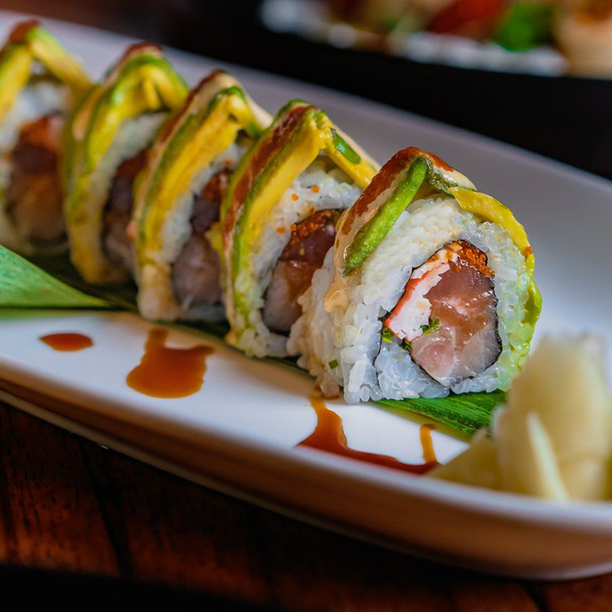

Dragon Rolls

Dragon rolls are tradtionally made with either tempura
shrimp, unagi, or crab as the filling.
While the top layer is made up of thinly sliced avacado.
Ingredients
- Japanese or Persian Cucumber
- 2 Avacados
- 1/2 Lemon
- 2 Sheets Nori
- 2 Cups Sushi Rice (cooked and seasoned)
- 8 Pieces Shrimp Tempura
- 2 Tbsp Tobiko
- Unagi Fillet
Toppings
- Spicy Mayo
- Unagi Sauce
- Toasted Black Sesame Seeds
Vinegar Water
- 1/4 Cup Water
- 2 Tsp Rice Vinegar (unseasoned)
Instructions
- Cut cucumbers lenghtwise into quarters. Remove seeds and again cut in half lengthwise into thin strips
- Cut avacado in half and remove pit
- Remove skin and thinly slice avacado crosswise
- Gently press sliced avacado pieces flat, while slightly seperating, to the length of the nori
- Line the bamboo mat with plastic wrap and place half of the nori sheet on top, shiny side down
- Dip hands into vinegar water and spread 1/2 cup sushi rice onto nori sheet
- Flip over the nori sheet and place two pieces of shimp tempura and two cucumber strips. Add some tobiko towards the end of the sheet
- From the bottom end, start tightly rolling the nori sheet over the filling until the bottom edge reaches the end of nori sheet. Tightly roll over the remaning nori
- Remove the bamboo mat and plastic wrap from the roll. Use the side of the knife to lift the avacado slices onto the top of the roll
- Wrap the top of the roll with plastic wrap and gently squeeze until the avacado slices wrap around the sides of the roll
- Cut the roll through the plastic wrap into 8 pieces. Cleaning the knife between each cut. Once sliced, gently remove plastic wrap
- Cover each piece in tobiko and drizzle with spicy mayo and finish with a sprinkle of black sesame seeds